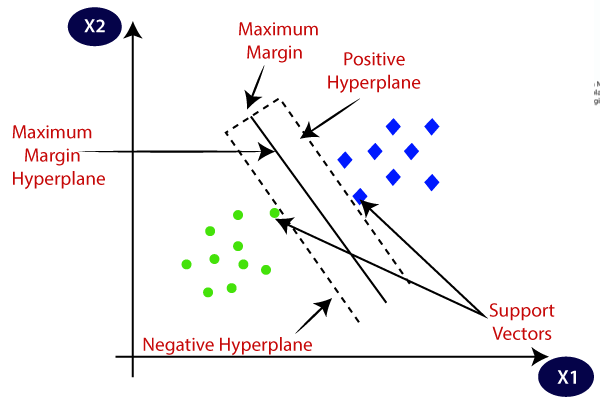
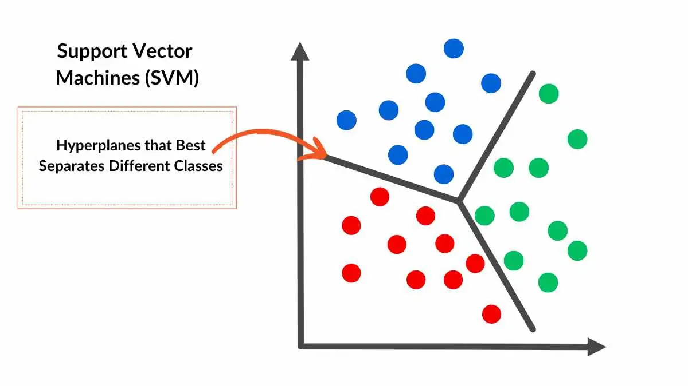
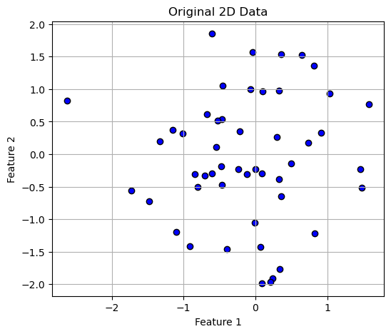
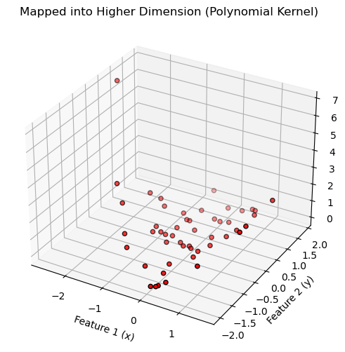
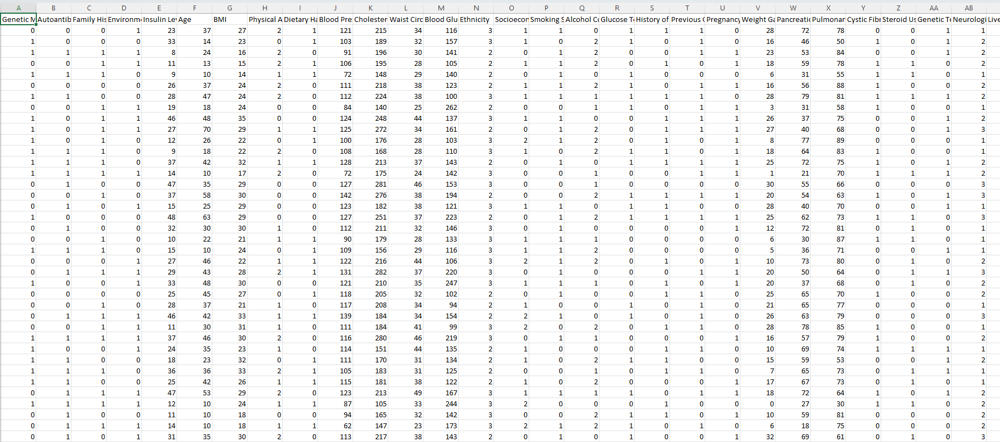
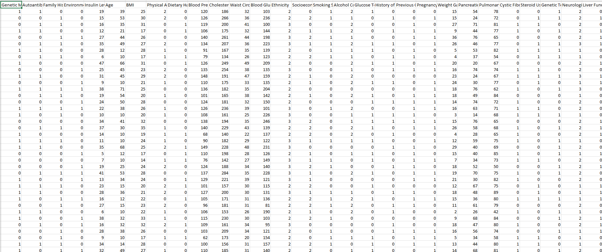
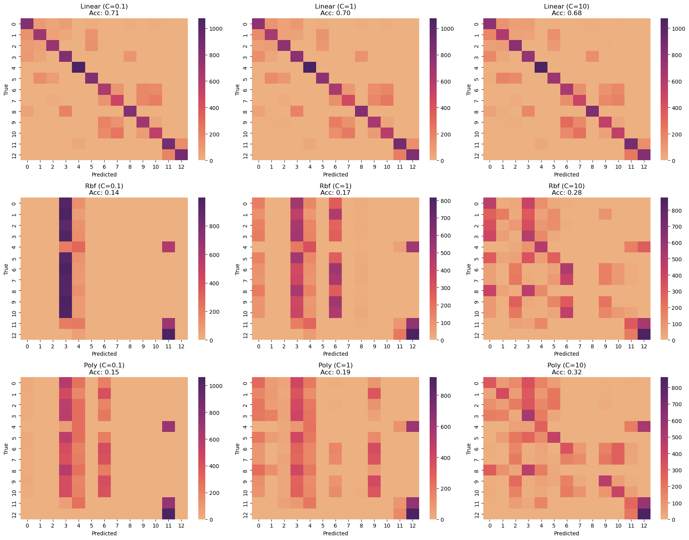
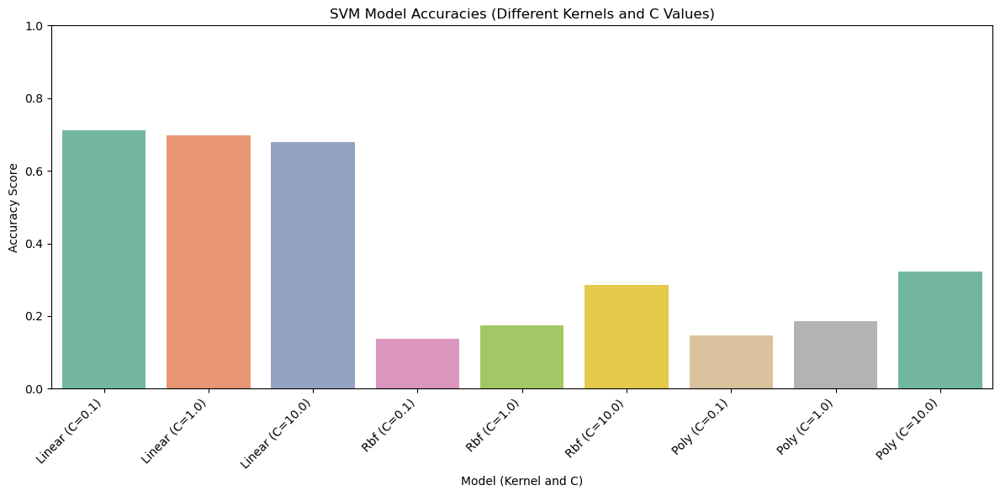
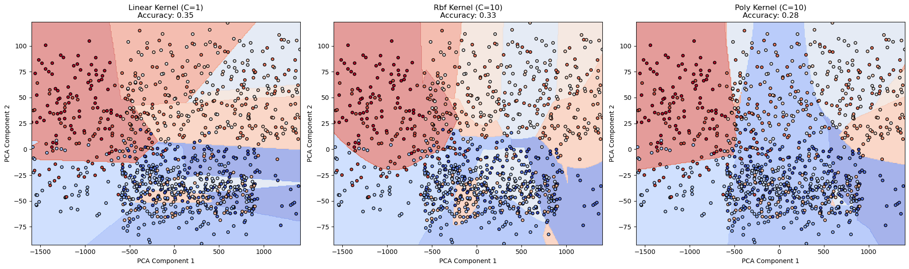

What is an SVM?
Support Vector Machines (SVMs) are supervised learning models that find the best separating hyperplane between classes by maximizing the margin. They are powerful for both linear and non-linear classification problems.

Why Are SVMs Linear Separators?
SVMs try to maximize the distance (margin) between classes. When no kernel is used, SVM acts as a linear separator, cutting space with a flat hyperplane.

Role of Dot Product and Kernels
The dot product measures similarity between vectors. Kernels extend this idea by mapping data into higher dimensions without explicitly computing coordinates, making non-linear separation possible (kernel trick).
Example: Mapping 2D Points Using a Polynomial Kernel (r=1, d=2)
Let's take an example where we have simple 2D data points (Feature 1, Feature 2). When we apply a polynomial kernel of degree 2, the data is mapped into a 3D space:
- Feature 1 → Feature 1²
- Feature 2 → Feature 2²
- Feature Interaction → √2 × Feature1 × Feature2
Original 2D Data

Mapped into Higher Dimension (Polynomial Kernel)

As shown above, after transformation, the points that were hard to separate with a straight line can now be easily separated with a linear boundary in the new 3D space. This is a fundamental idea behind how kernels empower SVMs to work with non-linear data.
GitHub Repository
View SVM Code on GitHub ↗Data Preprocessing Steps for SVM
Step 1: Load and Explore the Data
We loaded the prepared diabetes dataset (dt_prepared.csv) using pandas. The dataset had no missing values and included only numeric features suitable for SVM, so no encoding was required.

Step 2: Define Features (X) and Target (y)
We separated the independent features X (patient health indicators) and the dependent variable y (diabetes risk category). The Target column represents 13 different diabetes-related classes.
Step 3: Train-Test Split
The dataset was split into 80% training data and 20% testing data, while maintaining class balance using stratification. A fixed random state was set for reproducibility.
- Training Data: 80%
- Testing Data: 20%
- Random State: 11
- Stratification: Yes (to maintain class distribution)
Training Data Preview
Sample of the training data used to train the SVM models:

Download Training Sample CSVTesting Data Preview
Sample of the testing data used to evaluate model performance:

Download Testing Sample CSVDataset Summary
Summary of the total number of samples and features:

Step 5: Stratified Sampling for Faster Training
To speed up the model training process, especially while tuning hyperparameters, we applied StratifiedShuffleSplit
from sklearn.model_selection. This ensured that a smaller subset (1,000 samples) was drawn from the training data,
while preserving the same proportion of classes (stratification). This method balances efficiency with maintaining class distribution.
Model Building Overview
We trained 9 models by varying kernels and C values:
- Kernels: Linear, Polynomial (degree 3), RBF (Radial Basis Function)
- C Values: 0.1, 1, 10
Training was done on a stratified subsample of 1000 samples for faster computation.
Confusion Matrices Overview
The confusion matrices below summarize the performance of all 9 SVM models (across different kernels and C values).

Performance Comparison
| Kernel | C Value | Accuracy |
|---|---|---|
| Linear | 0.1 | 71.26% |
| Linear | 1 | 69.74% |
| Linear | 10 | 67.96% |
| RBF | 0.1 | 13.77% |
| RBF | 1 | 17.42% |
| RBF | 10 | 28.44% |
| Polynomial | 0.1 | 14.69% |
| Polynomial | 1 | 18.56% |
| Polynomial | 10 | 32.26% |

Decision Boundaries (PCA Projection)
This visualization shows how different SVM models (Linear, RBF, Polynomial) separated classes after applying PCA to reduce features into 2D.

Final Results and Conclusion
Key Insights
- The Linear Kernel performed best overall, achieving approximately 71% accuracy with C=0.1.
- RBF and Polynomial Kernels underperformed compared to Linear, likely because the data structure was already fairly separable without the need for complex transformations.
- Choosing the right kernel and regularization parameter (C) is critical. A lower C value (C=0.1) led to better generalization by allowing a wider margin and preventing overfitting.
- Stratified sampling (reducing training size with class balance) made the model training faster while maintaining meaningful class distributions.
Technical Learnings
- Although feature scaling was skipped here, in general, SVMs benefit greatly from proper scaling when features vary significantly in magnitude.
- Dimensionality transformations like polynomial kernels work well when the original data is complex but in this project, the simpler 2D-structure meant a linear separation was enough.
- Overcomplicating the model with non-linear kernels can sometimes harm performance if the dataset does not need high flexibility.
- StratifiedShuffleSplit was highly effective in balancing efficiency (faster model fitting) with data representativeness.
Non-Technical Learnings
In simple words, trying to make the model more complicated didn’t help. A straight-line approach (linear model) was actually the best because our patient data was already organized enough to be divided easily. It's like drawing a simple fence instead of building a maze when a fence is all you need.
Also, we learned that reducing the amount of training data smartly (but without losing the variety) helped the model stay fast and accurate, showing that bigger is not always better if you sample wisely.
Final Takeaway
The best-performing model for our diabetes prediction problem was a Linear SVM with C=0.1. It provided a strong balance between simplicity, generalization, training speed, and real-world applicability. Complex models like RBF or Polynomial kernels were unnecessary and even less accurate in this particular healthcare setting.
This project emphasized that understanding the data is just as important as building models sometimes, simpler methods deliver the smartest solutions.